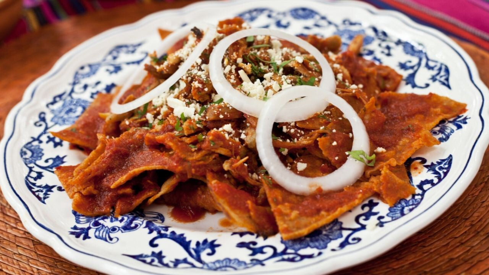

Chilaquiles

Although it can be served with multiple garnishes, cheese, onion, and cilantro are one of the most popular
Chilaquiles might be one of the most free-wheeling and versatile dishes Mexican cuisine can offer, since it's basically fried tortilla chips soaked on sauce with garnishes on top. Chilaquiles comes from the nahuatl word chilaquili, which can be translated to "put in chile".
The multiple variations of the dish range from the type of sauce used, how crispy or soggy the tortilla wedges are, the meat or protein it is served with (shredded chicken, beef, pork, or fried eggs), and the garnishes served on top. Maybe that's the reason it is one of the most popular dishes you can find at breakfast or brunch time in restaurants all around Mexico.
Ingredients
- 8 dried guajillo chiles, stemmed and seeded
- 4 ripe tomatoes
- 6 garlic cloves
- 2 tablespoons vegetable oil
- 3 cup chicken broth
- 2 springs of epazote
- A handful of cilantro leaves
- 12 cold or stale tortillas, cut into wedges
- Enough oil to a depth of 1-inch
- 2 cup shredded chicken meat
- ½ cup Mexican crema (or a substitute such as crème fraiche)
- A handful of thinly sliced white onion
- ¼ cup queso fresco cheese (or other garnishing cheese, such as parmesan or romano)
Steps
First cook the tortilla wedges
- If too moist, lay the tortillas out to dry for a few minutes. Otherwise they might absorb too much oil.
- Heat the oil in a deep heavy skillet over medium heat until 360 degrees.
- Fry the tortilla wedges in batches until the bubbling has stopped, about 2 to 3 minutes.
- Set them aside on a tray lined with paper towels.
Then cook the chile sauce
- Toast the chile pieces in a large heavy skillet over medium heat. Stir constantly until slightly browned and aromatic.
- Fully submerge the chiles in hot water for about 20 to 30 minutes to rehydrate.
- Broil the tomatoes and garlic in a dry skillet over medium-high heat until soft and blackened, about 3 minutes per side. Cool until you can handle them.
- Pull the skin from both tomatoes and garlic cloves. Drain the chiles, and put everything in a blender. Blend until smooth. Press the mixture into a strainer.
- Put oil on a skillet over medium-high heat. When hot enough to sizzle up sharply, add the pure all at once. Stir constantly for about 5 to 8 minutes. Pour in the chicken broth, and season with salt, epazote, and cilantro. Simmer until reduced to 4½ cups. If not enough sauce, add more chicken broth.
Finally put it all together
- Bring the sauce to a full boil over medium-high heat. Add in the tortilla chips and the shredded chicken meat. Stir until everything is coated in sauce.
- Turn off the heat. Cover and let stand for about 4 minutes, or until the tortilla chips have softened enough to your liking.
- Serve on deep plates. Drizzle with crema, scatter on the onion slices, and sprinkle with cheese, epazote, and cilantro.